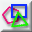
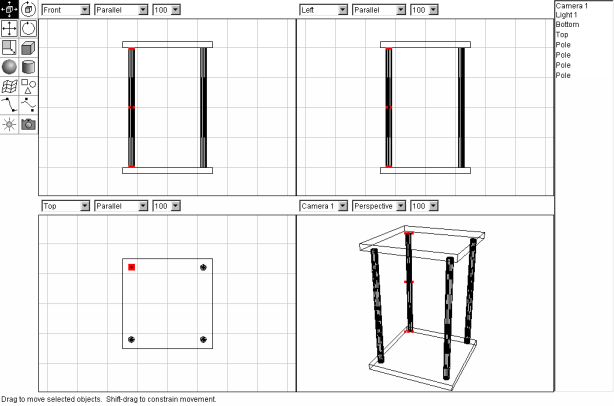
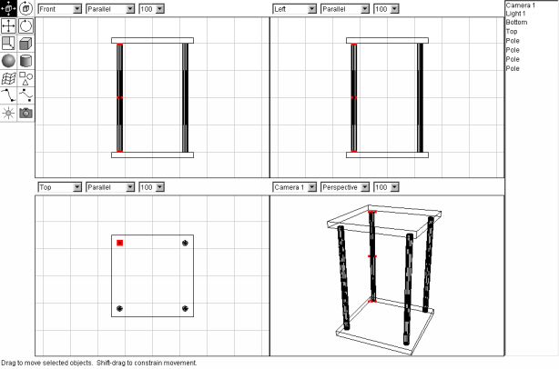
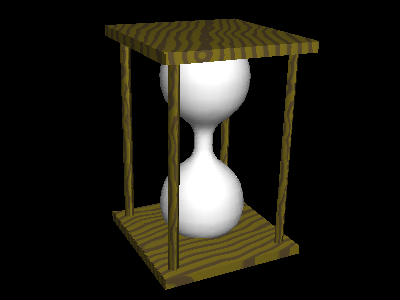
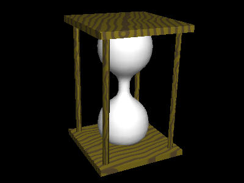

| move object |  |
 |
rotate object |
| resize object |  |
 |
create box |
| create sphere |  |
 |
create cylinder |
| create spline mesh |  |
 | create polygon |
| create camera |  |
 |
create lightsource |
| create interpolated curve |  |
 |
create approximated curve |
| move view |  |
rotate view |
'create box' tool 'resize object' tool 'move object' tool  'move object' tool. Hold shift to move only orthogonal. 'create cylinder' tool to create a cylinder of the following proportions:
'move viewpoint' tool and the 'rotate viewpoint' tool to change the lower-right view (camera1). Now you can see the model from any angle you like. The result should look something like this:

create approximated curve tool. To avoid painfully precise mouse work, create a first create a finer Grid: spacing 0.2 with 2 subdivisions. Then select Scene->One View from the menu. You can then set the zoom factor of the view to 200 percent. Now create the spline curve by adding the points 1 though 9 shown in the image below (in that order). Double click point 9 to finish the spline curve. Make sure that the first and the last point are nicely on the y axis and tangent to the the top and bottom boxes we made earlier.
'move object' tool. Hold shift to move only orthogonal. 'create cylinder' tool to create a cylinder of the following proportions:
'move viewpoint' tool and the 'rotate viewpoint' tool to change the lower-right view (camera1). Now you can see the model from any angle you like. The result should look something like this:

create approximated curve tool. To avoid painfully precise mouse work, create a first create a finer Grid: spacing 0.2 with 2 subdivisions. Then select Scene->One View from the menu. You can then set the zoom factor of the view to 200 percent. Now create the spline curve by adding the points 1 though 9 shown in the image below (in that order). Double click point 9 to finish the spline curve. Make sure that the first and the last point are nicely on the y axis and tangent to the the top and bottom boxes we made earlier.
 The approximated curve is not very intuitive, but allows you to determine the direction of the curve more exactly than the interpolated curve does. The direction of the curve at the beginning and end of the curve is determined by the only adjectent point. The curve is vertical at point 5 because points 4 and 6 are in both vertically displaced from this point. In general, the curve at any point is determined by the immediately preceding and the two next definition points (the curve is a quadratic spline, or, third order spline).
As the central axis of the glass bulb, we will use the line running though the endpoints of the curve. In our drawing, this is the y axis, but by using the first line results in a solid object. To create the lathe, first select the curve and then select Tools->Lathe from the menu. In the lathe dialog, select the Line though endpoints as the lathe axis. (See figure below).
The approximated curve is not very intuitive, but allows you to determine the direction of the curve more exactly than the interpolated curve does. The direction of the curve at the beginning and end of the curve is determined by the only adjectent point. The curve is vertical at point 5 because points 4 and 6 are in both vertically displaced from this point. In general, the curve at any point is determined by the immediately preceding and the two next definition points (the curve is a quadratic spline, or, third order spline).
As the central axis of the glass bulb, we will use the line running though the endpoints of the curve. In our drawing, this is the y axis, but by using the first line results in a solid object. To create the lathe, first select the curve and then select Tools->Lathe from the menu. In the lathe dialog, select the Line though endpoints as the lathe axis. (See figure below).
 The lathe shape is automatically centered at 0,0,0. This is exactly where we want it, so leave it. (Ofcourse this is no coincidence, I planned it that way!). The spline curve that we created first is now redundant. You may delete it, but you don't have to since it won't show up in the final rendering. To delete an object, select it (from screen or from list of objects) and press backspace on the keyboard. You may also use the menu option Edit->Clear.
Move view tool and the Rotate view tool. Hold Control while moving the view to zoom in and out. And you may roll the view over by holding Control and using the rotate view tool. You may also position the camera using the move object tool and the rotate object tool or with the Layout object menu option. The camera is an object just like any other. A good position might be one where you can see the top and two other sides of the object.
Next we should illuminate the scene. As you can see there already a light source in the scene from the beginning of the session, Light 1. The light source should be positioned so that it illuminates the side of the object we are looking at. Light 1 is propably not positioned correcty given the position of the camera. Since this lightsource is also far away, we'll delete it and create a new one. AoI supports three types of lightsources: point lights, directional lights and spot lights. We'll use the simplest of them, the point light. Follow The next steps to correctly illuminate the scene:
create lightsource icon and click over the position where you want the light. You should propably move the light (just like moving other objects) in one of the other views to get the correct position in 3D space.
The lathe shape is automatically centered at 0,0,0. This is exactly where we want it, so leave it. (Ofcourse this is no coincidence, I planned it that way!). The spline curve that we created first is now redundant. You may delete it, but you don't have to since it won't show up in the final rendering. To delete an object, select it (from screen or from list of objects) and press backspace on the keyboard. You may also use the menu option Edit->Clear.
Move view tool and the Rotate view tool. Hold Control while moving the view to zoom in and out. And you may roll the view over by holding Control and using the rotate view tool. You may also position the camera using the move object tool and the rotate object tool or with the Layout object menu option. The camera is an object just like any other. A good position might be one where you can see the top and two other sides of the object.
Next we should illuminate the scene. As you can see there already a light source in the scene from the beginning of the session, Light 1. The light source should be positioned so that it illuminates the side of the object we are looking at. Light 1 is propably not positioned correcty given the position of the camera. Since this lightsource is also far away, we'll delete it and create a new one. AoI supports three types of lightsources: point lights, directional lights and spot lights. We'll use the simplest of them, the point light. Follow The next steps to correctly illuminate the scene:
create lightsource icon and click over the position where you want the light. You should propably move the light (just like moving other objects) in one of the other views to get the correct position in 3D space. 
 Rather boring isn't it ? Everything is a dull white. We want wood and glass, we should add textures.
Rather boring isn't it ? Everything is a dull white. We want wood and glass, we should add textures.
 3D procedureal textures determine color, roughness, reflection and other surface properties as a function of 3D coordinates. For any position in space, the texture defines what a shape's surface looks like, as if we had cut the shape out of a solid block of this 'material'. However, for object of which we can actually see the inside, transparent objects, we should use a material to define the inside, not a texture. Textures only determine what the surface of an object looks like.
A function mapping 3D coordinates to the values of teture properies is created by graphically connecting functional modules in the procedural editor. There are six categories of modules:
3D procedureal textures determine color, roughness, reflection and other surface properties as a function of 3D coordinates. For any position in space, the texture defines what a shape's surface looks like, as if we had cut the shape out of a solid block of this 'material'. However, for object of which we can actually see the inside, transparent objects, we should use a material to define the inside, not a texture. Textures only determine what the surface of an object looks like.
A function mapping 3D coordinates to the values of teture properies is created by graphically connecting functional modules in the procedural editor. There are six categories of modules:


 The texture doesn't realy look very realistic but it will have to do for now. To create more complex texture, read the section on textures of the the Art of Illusion manual.
This texture will be assigned to the top and bottom boards and the sticks in between that we've created earlier. Select all the shapes that should be assiged the Wood texture. Then select Object->Set Texture from the menu. Now select the Wood texture and press O.K.
Now select only the Top and Bottom objects. Again call up the set texture dialog. Now click on the button labeled Edit Mapping. In this dialog, yoou may scale, translate, and rotate the texture to fit the object. We'll only rotate the texture to get the following result:
The texture doesn't realy look very realistic but it will have to do for now. To create more complex texture, read the section on textures of the the Art of Illusion manual.
This texture will be assigned to the top and bottom boards and the sticks in between that we've created earlier. Select all the shapes that should be assiged the Wood texture. Then select Object->Set Texture from the menu. Now select the Wood texture and press O.K.
Now select only the Top and Bottom objects. Again call up the set texture dialog. Now click on the button labeled Edit Mapping. In this dialog, yoou may scale, translate, and rotate the texture to fit the object. We'll only rotate the texture to get the following result:
 Now for the sticks. Select them all and edit the mapping mapping again. Create a mapping like this:
Now for the sticks. Select them all and edit the mapping mapping again. Create a mapping like this:
 Now let's look at the result. The rendered image will look something like this:

Now let's look at the result. The rendered image will look something like this:

 To create a new material, select Scene->Materials and click on the New button. The new material may also be named Glass. It should be a uniform material. You can see the parameter settings in the image below.
The color of a material is affected by two parameters: Material color and Transparent Color.
Both color parameters attenuate the color of the light as it passes through the material. Material color only affects the light that reaches the camera directly, it is the color that the object appears to have. Transparent Color affects all light passing though the object, and also colors the shadows cast by the object. The first color paramter is easier to use though because it species what color the object will look like. Transparent color however, specifies the fraction of red, green and blue that passes though. The rest of the ligh is reflected and determines the objects color.
Howmuch the light is attenuated is determined by the Desnity value. A value of zero results in no attenuation. For this glass material we'll specify a simple green material color that only shows on very massive objects.
To create a new material, select Scene->Materials and click on the New button. The new material may also be named Glass. It should be a uniform material. You can see the parameter settings in the image below.
The color of a material is affected by two parameters: Material color and Transparent Color.
Both color parameters attenuate the color of the light as it passes through the material. Material color only affects the light that reaches the camera directly, it is the color that the object appears to have. Transparent Color affects all light passing though the object, and also colors the shadows cast by the object. The first color paramter is easier to use though because it species what color the object will look like. Transparent color however, specifies the fraction of red, green and blue that passes though. The rest of the ligh is reflected and determines the objects color.
Howmuch the light is attenuated is determined by the Desnity value. A value of zero results in no attenuation. For this glass material we'll specify a simple green material color that only shows on very massive objects.


 To increase the realism of the lighting scheme, try using two lamps, one of light blue color and the other light orange/yellow, on opposite sides of the model. For both lamps, set the decay rate to .3, the radius to 1 and enable soft shadows when you render the image.
To increase the realism of the lighting scheme, try using two lamps, one of light blue color and the other light orange/yellow, on opposite sides of the model. For both lamps, set the decay rate to .3, the radius to 1 and enable soft shadows when you render the image.